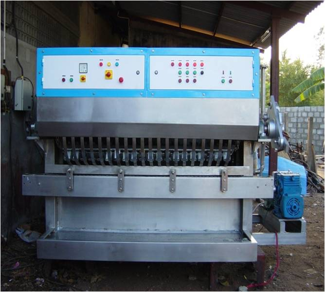

Navigation
Tunnel Rinsing machine 240 BPM capacity
| Model | UM-A-WM 240 |
|---|---|
| Power | 15 kW |
Water Consumption |
3 to 4 m3/hr |
Dimensions |
5 x 2.1 x 1.5 Mtr |
No. of Pockets in each carrier |
20 |
No. of Bottle carriers |
20 |
Capacity |
240 bpm |
Tunnel Rinser - Specifications
- Frequency controller for varying speed of machine from 50 BPM- 240 BPM
- Complete shell and body made up of SS 304 Grade Stainless Steel
- All spray pipes and jets are made up of SS 304 Grade Stainless Steel
- 3 Nos of MonoBlock Pump are provided for jet cleaning and fresh water spray system
- World renowned RB Ball valves made in Italy are used
- Drive chains are made up of SS 304 Grade Stainless Steel
- All tracks are made of SS 304 Grade Stainless Steel
- All bottle carriers are made up of SS 304 Grade Stainless Steel with PVC sleeves for cushioning
- Motors – Kirloskar/Crompton/ABB/Hindustan
- Gear Box – Elecon/Shanthi
- Our recent Tunnel Rinser having digital pressure indicator and also pump pressure drop lighting warning signal with sound system.
Salient features:
- Our machines are well accepted and established among leading distilleries for the past 10 years, as they are absolutely maintenance free with least replacement of spares.
- All the spares are made of SS 304 material thus avoiding worn out
- Easy removal and fixing of spray pipes for the centering the water spray into the bottle
- Spraying of water through jets can easily be viewed from window
- Our cleaning is proven for its application for re-cycled bottles
- The unloading of bottles is made so simple and easy that the function can be handled by even an unskilled labour